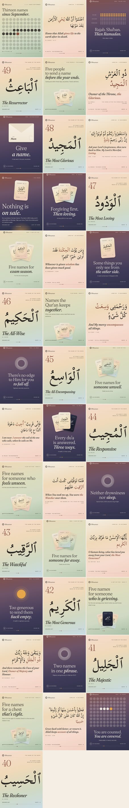

The plan for 5 October to 13 December, and the reasoning under every choice in it. Instagram in late 2026 ranks on three things above all: whether people send a post to someone, how long they watch, and how many like it relative to how many saw it. Reels are still the only real route to people who don't follow you; carousels earn the most saves and the most engagement per view; single images have lost almost half their engagement in a year. So the quiet months post four times a week: one name carousel to save, one reel to reach, one Jumu'ah carousel to send, one set to send to one person. Open the calendar.
Each one is dated, because Instagram changes every quarter and a 2023 rule repeated in a 2026 blog is still a 2023 rule.
Mosseri has named watch time, likes per reach and sends per reach as the top three. Sends weigh most with people who don't follow you yet.
Average reel watch time is 8.5 seconds. Instagram's own reels guide (28 Sept 2026) says engaging from the first second, with 15 to 60 seconds as the sweet spot.
Since 30 April 2026, accounts that mostly repost are cut from recommendations, now for photos and carousels too.
Carousels get 6.9% engagement per reach against 4.4% for images and 3.3% for reels, and about nine times the saves of a single image. Instagram re-serves a carousel at slide two to anyone who didn't swipe.
Reels get 1.36 times the reach of carousels and 2.25 times that of images. Reels that are mostly text, silent or watermarked are shown less.
Instagram capped hashtags at five on 18 Dec 2025. Search now reads captions, on-screen text and alt text, and Google indexes public professional posts.
Accounts posting 3 to 5 times a week grow followers at more than twice the rate of those posting once or twice; weeks with nothing hurt. Most of a post's views come in its first three days.
Stories don't bring new reach, and resharing your own post there changes nothing (Mosseri, Apr 2026). They do build the ties that make your posts show up: replies, taps and sticker answers. Story replies rose 88% this year.
The Reveal sticker hides a story until the viewer sends a DM. Every reveal is a DM thread that didn't exist before.
“Your Algorithm” lets people choose topics for Reels, Explore and now Feed (June 2026). Content that sits clearly in one topic is easier to recommend.
The question to ask of every idea is what the person should do with it: keep it, watch it, send it, or answer it. The format follows from the answer.
| Format | Use it when | Don't use it when | In this plan |
|---|---|---|---|
| Carousel 1080 × 1350, up to 10 slides through the API | The idea is a list, a sequence or a reference: the reader will want it again. Each slide can stand alone, and slide two can hook someone on its own. | The whole idea is one line. A second slide only dilutes it. | Monday's name (6 slides), Friday's Jumu'ah (3), Sunday's sets (7), the pairs, the season's close. 26 in all. |
| Reel 1080 × 1920, 18 to 26 s | The meaning can be shown in motion: a ring outgrowing the frame, a card turning over, an envelope opening. You want people who don't follow yet. | The only moving part would be the words. Text-only reels are shown less. | Every Wednesday at Maghrib, plus three Sunday sets dealt as cards. 13 in all. |
| Single image 1080 × 1350 | Almost never in 2026. Only when the post is one sentence meant to be screenshotted, and a swipe would weaken it. | Anything that could be a carousel: singles lost 46% of their engagement this year. | Once: “Nothing is on sale,” the Thursday before Black Friday. |
| Story, no sticker 1080 × 1920 | A reminder, a line, the hour, a breath. Metricool publishes these on its own. | You need an answer back. | 59 frames, all auto-publishing. |
| Story with a sticker 1080 × 1920, placed by hand | You want a tap, a vote, a DM or a link click. One-tap stickers work even for a small audience. | The sticker would be decoration. Every sticker here asks for something real. | 51 frames: 10 polls, 10 quizzes, 10 sliders, 10 reveals, 9 links, 2 question boxes. |
Every post wears the hour it goes up at, so the grid alternates dawn, dusk, noon and afternoon in a steady weave. UK clocks go back on 25 October and US clocks on 1 November; after that Lagos is one hour ahead of London and six ahead of New York.
| Slot | Lagos (WAT) | London | New York | What | Palette |
|---|---|---|---|---|---|
| Monday | 06:30 | 05:30 | 00:30 | The name of the week, 6-slide carousel. Story: the name, then a poll. | Fajr |
| Tuesday | 13:00 | 12:00 | 07:00 | Stories only: a quiz on last week's name. | Dhuhr |
| Wednesday | 19:00 | 18:00 | 13:00 | The reel. Story: one line from it, then an emoji slider. | Maghrib |
| Thursday | 21:00 | 20:00 | 15:00 | Stories only: one breath before sleep. | Isha |
| Friday | 11:00 | 10:00 | 05:00 | Jumu'ah, 3-slide carousel. Stories at 11:15 and at 15:00 for the last hour before Maghrib. | Dhuhr |
| Sunday | 16:00 | 15:00 | 10:00 | A set of five names, as a carousel or a dealt reel. Stories: a line, a link sticker to Send-a-Name, and at 20:00 the Reveal of next week's name. | Asr |
Times are a starting point from Buffer's and Sprout's studies, which disagree with each other. After three or four weeks, Metricool's Best Times uses your own audience (it needs the Facebook-login connection and 100 followers). Move a slot by an hour if your numbers say so, and keep the day.

Every sheet is a page of an almanac: a running head, a body laid on a grid, and a foot carrying the line of ninety-nine. The rays, cards, envelopes, dots and the hour dial each get a cell of their own, and no word is laid over them. This is checked, not hoped for: check.mjs rasterises every sheet twice with the words hidden, once as drawn and once with every drawn thing hidden too, and the two pictures must match under every line of text. All 253 sheets pass. Every reel frame is checked the same way, against the shapes it declares.
No scheduler can place a sticker: Instagram's publishing API has no stickers at all, and the web version can't add them either. So the 51 sticker stories arrive in Metricool as drafts at their exact time, with an empty zone drawn where the sticker goes. The planner spells out every sticker's text and options for that day.
Quiz: the quiz sticker has been unreliable on some phones since March 2026. If it's missing, use a poll with the first two options. Reveal: the story is blurred until someone sends a DM; reply to as many as you can, because each reply strengthens that tie. Link: point it to 99names.net/send with the text “Send a name”.
metricool-01.csv, then the rest in order (50 rows or fewer each, as Metricool recommends). Date format YYYY-MM-DD, time HH:MM:SS. Check the preview, then the Feed Preview.node schedule.mjs --template your-template.csv; every value is then placed by column name./social/quiet/out/media/, so Metricool can fetch them. Leave them there until the season has published.https://ai.metricool.com/mcp, any plan). Connect it and a session can create, move and check scheduled posts directly, for example “move Wednesday's reel to 20:00”.No sale, no countdown. Black Friday gets the one single image of the season: nothing is on sale. No crescents or lanterns, by the brand's rule, so Rajab is drawn as dots. No engagement bait: no “comment ameen”, no “type YES”. Meta demotes it and it isn't who we are; the stickers ask honest questions instead. No trending audio: every reel carries our own hour chords, which is original audio. If you want reach from a licensed track, Metricool can add one from Meta's cleared library at scheduling. No reposts of anyone's calligraphy, and no AI faces or people.
Hijri dates. Every date here follows the Umm al-Qura calendar: 1 Jumada al-Akhirah on 11 November, the white days on 24 to 26 October and 23 to 25 November, 1 Rajab on Thursday 10 December. Nigeria follows the Sultan of Sokoto's sighting, which can differ by a day. The captions and stories say so.
Stickers cost time. 51 frames at about 30 seconds each is roughly 25 minutes across ten weeks. Skipping one is fine; the frame still works without it.
Trial Reels. Instagram can send a reel to non-followers first and share it with followers only if it performs. Metricool supports it, but your account has to be eligible. Check in the app, and if it is, try it on the Sunday dealt reels first.
Watch the numbers, not the rules. After four weeks, compare sends per reach and saves per reach by format in Metricool. If the dealt reels out-send the carousel sets, deal more of them.